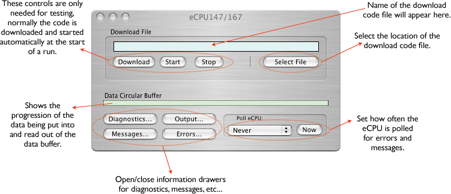

Orca provides support for using a VME-based embedded CPU. Either the MV147 or the MV167 can be used. The include download code included in the distrubution only supports eCPU readout of the shaper ADC cards at this time. That code may be expanded to support other cards in future releases of ORCA. Custom code can be written to support other cards using the existing download code as an example. Data is readout to ORCA using the dual-port memory of the controller card, either the 617 or the 620
The eCPU card can only be placed in a VME crate and looks like this: 
